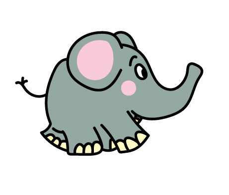

Elefante
Los elefantes son los animales terrestres más grandes del mundo. Son conocidos por sus grandes orejas, trompa larga y memoria increíble.
Tigre

Los tigres son grandes felinos conocidos por sus rayas anaranjadas y negras. Son cazadores solitarios y viven en la selva.
León
Los leones son conocidos como los reyes de la selva. Viven en grupos llamados manadas y son famosos por su melena.
Mono
Los monos son animales muy inteligentes y juguetones. Viven en grupos y pasan mucho tiempo trepando árboles.
Jirafa
Las jirafas son los animales más altos del mundo. Tienen cuellos largos que les permiten comer hojas de árboles altos.
Cebra
Las cebras son conocidas por sus rayas blancas y negras. Cada cebra tiene un patrón único de rayas, como una huella digital.
Oso
Los osos son grandes mamíferos que viven en bosques y montañas. Son conocidos por ser fuertes y hábiles pescadores.
Panda

Los pandas son osos blancos y negros que viven en China. Son famosos por comer bambú y tener una apariencia adorable.